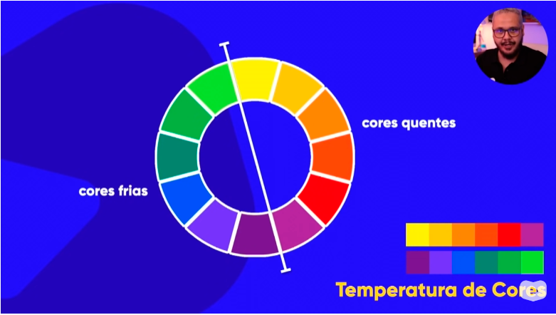

Ámarelo
Vermelho
Azul
Verde
Laranja
Violeta
Cores tercearias sao misturas das primárias e secundarias
Amarelo alaranjado
Vermelho alaranjado
Vermelho arroxeado
Azul arroxeado
Azul esverdeado
Amarelo esverdeado

Usa-se cores quentes/frias de acordo com o tema do seu projeto quente ou frio
Usa-se cores complementares para obter um contraste adequado com o seu projeto
Cores analogas sao combinaçoes em que tem pouco contraste, ou seja cores que combinam
Usa-se quando voce precisa de uma cor para contrastar entre outras que combinam.
Usa-se quando voce precisa de uma cor com pouco contraste
Cores com pouca combinação cuidado para usalas
Cores com bastante contraste
Uma paleta de cores fortes e bem balanceadas
Cores quem combinam e tem um pouco de contraste
Uma unica cor onde voce altera a saturação e o brilho dela